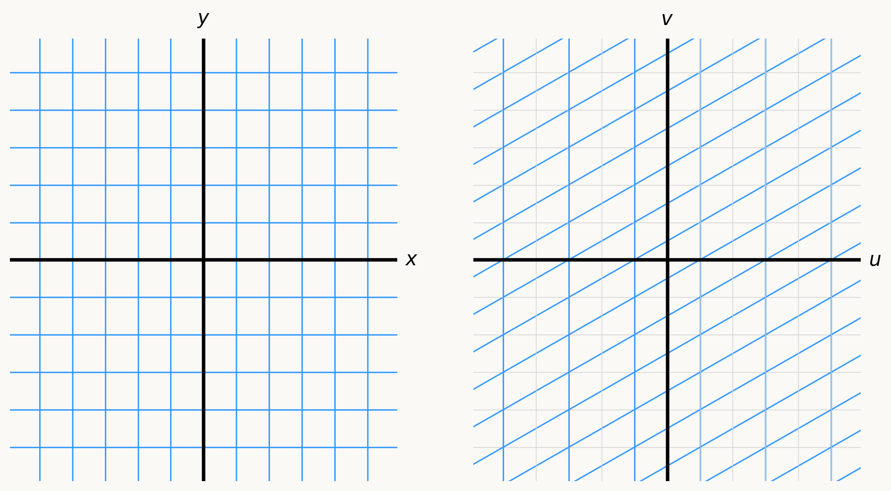

import numpy as np
import matplotlib.pyplot as plt
blue = "#3399FF"
light_gray = "#D3D3D3"
x_range = np.linspace(-10, 10, 300)
y_range = np.linspace(-10, 10, 300)
fig, axes = plt.subplots(ncols=2, figsize=(9, 5))
fig.set_facecolor("#FAF9F6")
axes[0].set_facecolor("#FAF9F6")
axes[1].set_facecolor("#FAF9F6")
for y in np.arange(-10, 11):
u = x_range
v = [y] * 300
axes[0].plot(u, v, color=blue, linewidth=1)
axes[1].plot(u, v, color=light_gray, linewidth=0.5)
u = 2 * x_range + 1
v = x_range - y - 1
axes[1].plot(u, v, color=blue, linewidth=1)
for x in np.arange(-10, 11):
u = [x] * 300
v = y_range
axes[0].plot(u, v, color=blue, linewidth=1)
axes[1].plot(u, v, color=light_gray, linewidth=0.5)
u = [2 * x + 1] * 300
v = x - y_range - 1
axes[1].plot(u, v, color=blue, linewidth=1)
for ax in axes:
ax.set_xlim(-5.9, 5.9)
ax.set_ylim(-5.9, 5.9)
ax.spines["top"].set_visible(False)
ax.spines["right"].set_visible(False)
ax.spines["bottom"].set_visible(False)
ax.spines["left"].set_visible(False)
ax.set_xticks([])
ax.set_yticks([])
ax.axhline(0, color="black", linewidth=2.5)
ax.axvline(0, color="black", linewidth=2.5)
axes[0].text(6.15, 0, r"$x$", fontsize=14, ha="left", va="center")
axes[0].text(0, 6.15, r"$y$", fontsize=14, ha="center", va="bottom")
axes[1].text(6.15, 0, r"$u$", fontsize=14, ha="left", va="center")
axes[1].text(0, 6.15, r"$v$", fontsize=14, ha="center", va="bottom")
plt.tight_layout(w_pad=4)
plt.show()